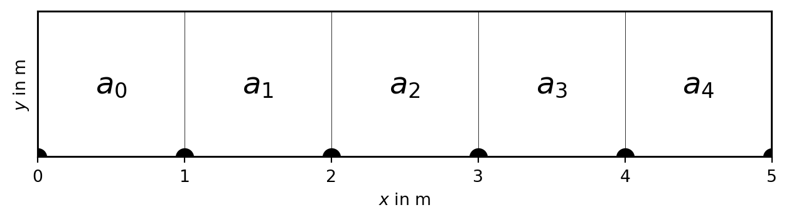
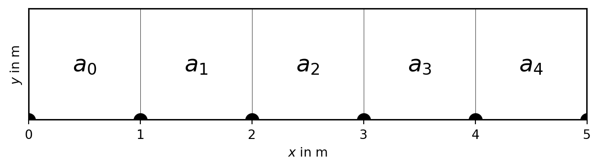
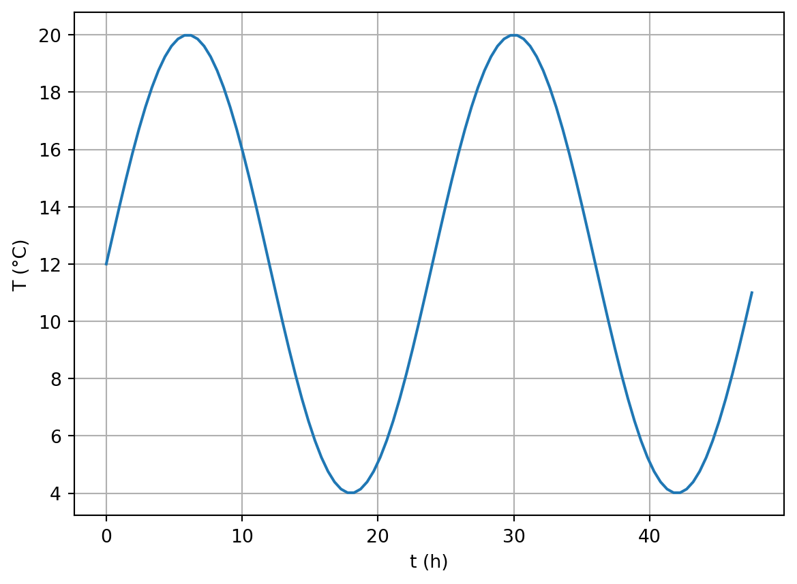
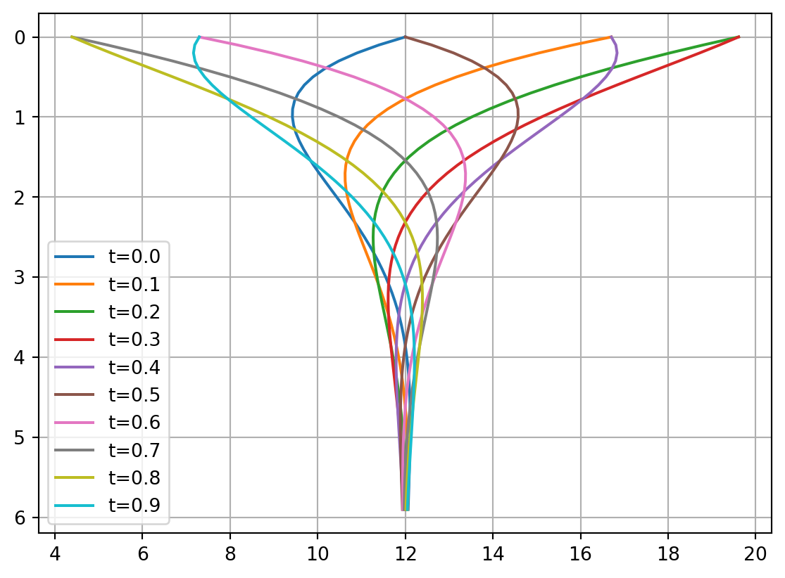
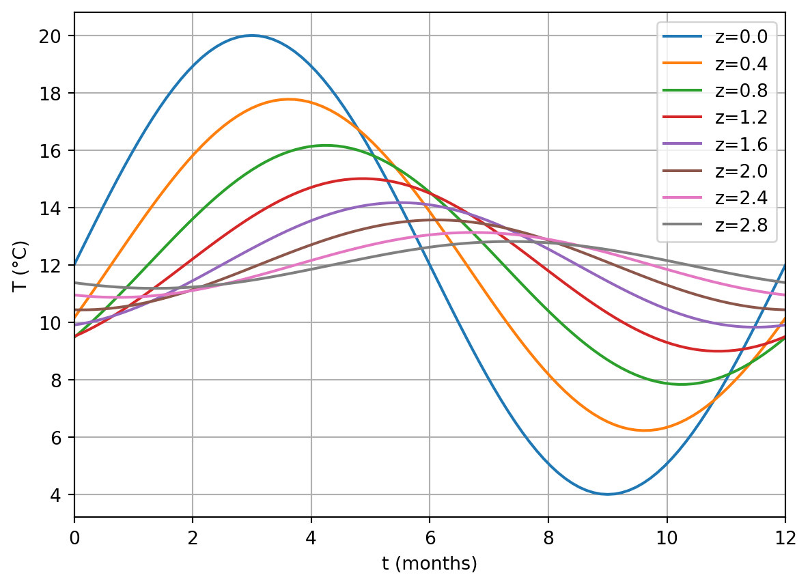
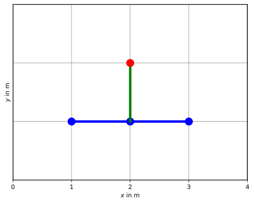
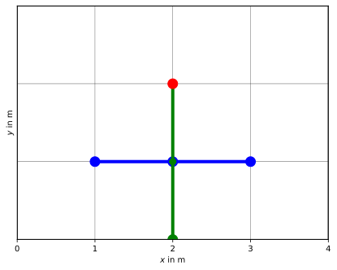
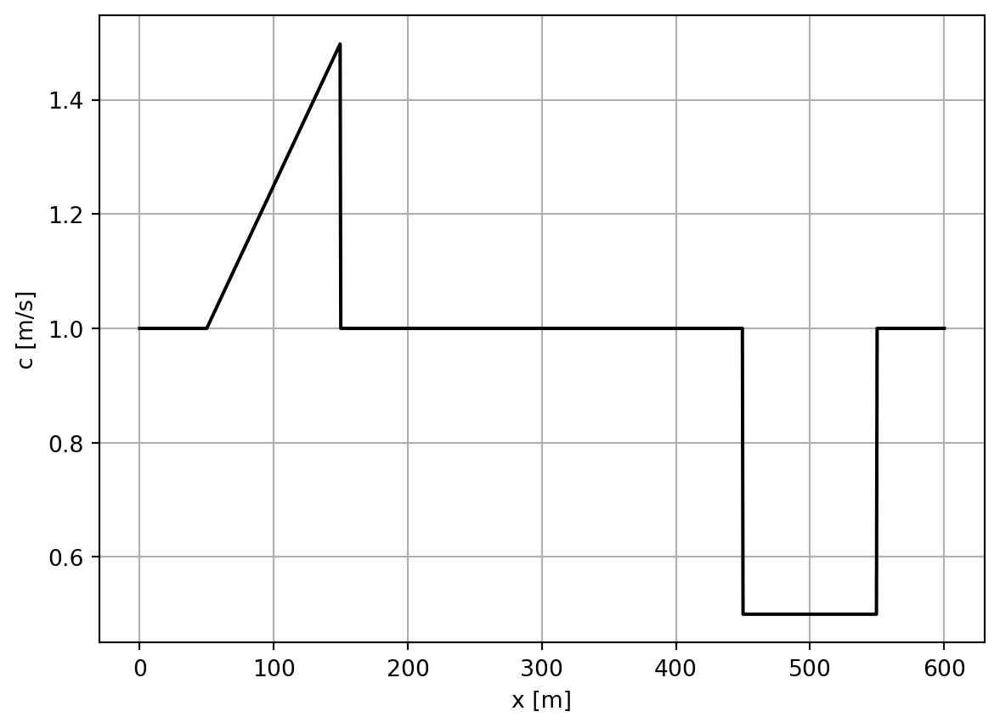
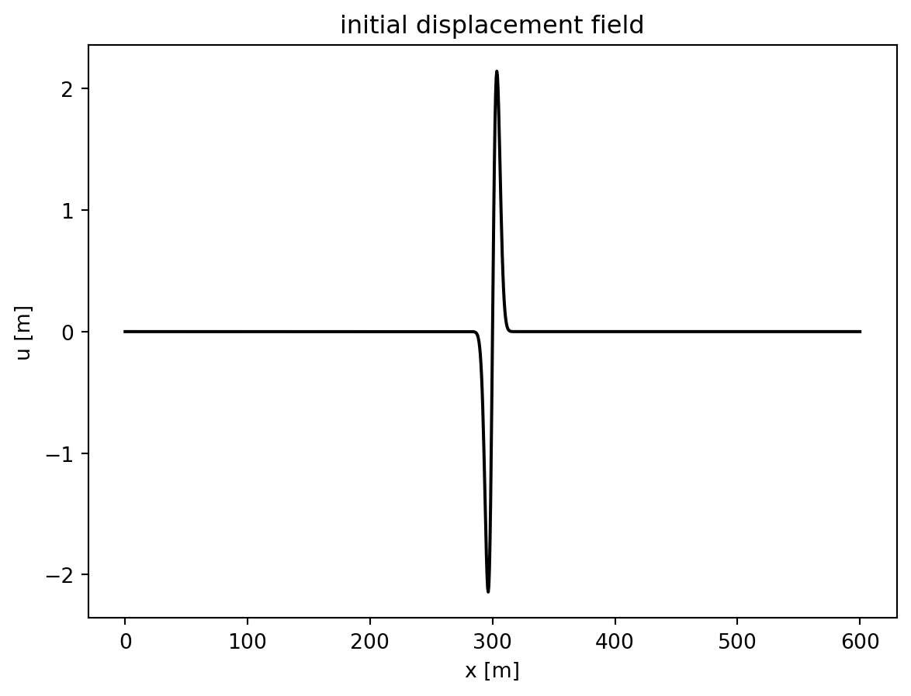
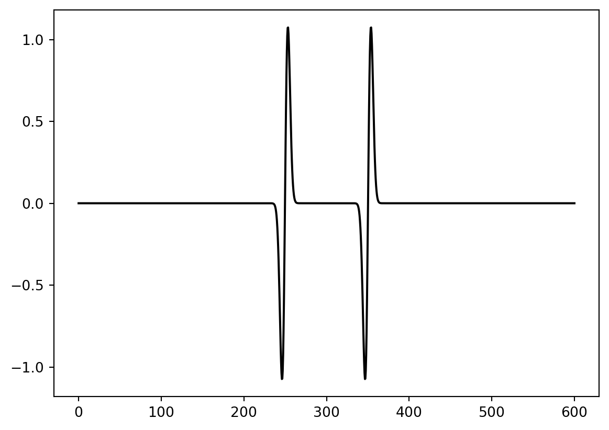

--------------------------------------------------------------------------- ImportError Traceback (most recent call last) ImportError: DLL load failed while importing _multiarray_umath: Das angegebene Modul wurde nicht gefunden.

Assume the general Poisson equation \[-\div(a\grad u)=f\]
with some conductivity \(a\), a source term \(f\) and the potential \(u\). This can be an electric potential with \(a=\sigma\), the hydraulic head with hydraulic conductivity \(k\), the temperature with the thermal conductivity or the gravity potential with \(a=1\). Note that we are using the form with the leading minus. First, \(-\grad u\) is typically the field (e.g. electric) and \(a\grad u\) is usually the flow (e.g. streaming velocity or current density) towards decreasing potential.
Neglecting \(a\) for a moment, the left-hand side is the second derivative, i.e. a curvature. A positive source field \(f\) leads to a negative curvature, i.e. a decreasing slope of the potential curve. This is a maximum of the potential caused by the source, e.g., an increased temperature for a heat source.
and solution \(u\) by finite values \(u_i\) at points \(x_i\), e.g. \[ \dv*{u}{x}_{2.5} := (u_3-u_2) / (x_3-x_2) \]
\[\pdv[2]{u_3}{x}\approx \frac{\dv*{u}{x}_{3.5}-\dv*{u}{x}_{2.5}}{(x_4-x_2)/2} = \frac{(u_4-u_3)/(x_4-x_3)-(u_3-u_2)/(x_3-x_2)}{(x_4-x_2)/2} \]
Assumption: equidistant discretization \(\Delta x\), conductivity 1
1st derivative: \([-1, +1] / dx\), 2nd derivative \([+1, -2, +1] / dx^2\)
Matrix-Vector product \(\vb{A}\cdot\vb{u}=\vb{f}\) with
\[ \vb{A} = \frac{1}{\Delta x} \begin{bmatrix} -1 & +2 & -1 & 0 & \ldots & & \\ 0 & -1 & +2 & -1 & 0 & \ldots & \\ \vdots & \vdots & \vdots & \ddots & \vdots & \\ \ldots & \ldots & 0 & -1 & +2 & -1 \end{bmatrix} \]
This is illustrated by the Finite Difference stencil (Figure 2.1): Every point, e.g. the red point, is constructed by using its neighbors.
Assume the Poisson equation \[\div(a\grad u)=f\] with a conductivity term \(a\)
\[ \pdv{(a \pdv*{u}{z})}{z} = a\pdv[2]{u}{z} + \pdv{a}{z} \pdv{u}{z} \]
Dirichlet conditions: \(u_0=u_B\) (homogeneous if 0)
Neumann conditions (homogeneous if 0) \[ \pdv*{u}{x}_0=g_B \]
Mixed boundary conditions \(u_0+\alpha du_0/dx=\gamma\)
Assume the dirichlet condition on the upper boundary \[u_0 = u_B \tag{2.1}\] fixes the potential to a specific value \(u_B\). #### Implementation 1 : explicit (2.1) can be directly added as an equation in the matrix and the right-hand-side:
\[ \begin{bmatrix} +1 & 0 & 0 & \ldots & & \\ -1 & +2 & -1 & 0 & \ldots & \\ \vdots & \vdots & \ddots & \vdots & \\ \ldots & \ldots & 0 & -1 & +2 & -1 \end{bmatrix} \cdot\vb{u} = \begin{bmatrix} u_B\\ f_1 \\ \vdots \\ f_N \end{bmatrix} \]
The Dirichlet condition (2.1) is directly inserted into the second equation \(-u_B + 2 u_1 - u_2 = f_1\) and the first equation is omitted
\[ \begin{bmatrix} +2 & -1 & 0 & \ldots & & \\ -1 & +2 & -1 & 0 & \ldots & \\ \vdots & \vdots & \ddots & \vdots & \\ \ldots & 0 & -1 & +2 & -1 \end{bmatrix} \cdot\vb{u} = \begin{bmatrix} f_1 + u_B\\ f_2 \\ \vdots \\ f_N \end{bmatrix} \]
Consequently, the first column is removed and the first equation is the sum of the preceding two other equations.
The Neumann boundary condition \[ u_1 - u_0 = g_B \tag{2.2}\] fixes the gradient of the potential at the left end.
The equation (2.2) replaces the first equation \[ \begin{bmatrix} -1 & +1 & 0 & \ldots & & \\ -1 & +2 & -1 & 0 & \ldots & \\ \vdots & \vdots & \vdots & \ddots & \vdots \\ \ldots & \ldots & -1 & +2 & -1 \end{bmatrix} \cdot\vb{u} = \begin{bmatrix} g_B\\ f_1 \\ \vdots \\ f_N \end{bmatrix} \] Note that this would result in an unsymmetric matrix for the left boundary, but in a symmetric matrix for the right boundary. Therefore we better use the outward normal direction \[ u_0 - u_1 = g_B \tag{2.3}\] leading to the symmetric matrix \[ \begin{bmatrix} +1 & -1 & 0 & \ldots & & \\ -1 & +2 & -1 & 0 & \ldots & \\ \vdots & \vdots & \vdots & \ddots & \vdots \\ \ldots & \ldots & -1 & +2 & -1 \end{bmatrix} \cdot\vb{u} = \begin{bmatrix} g_B\\ f_1 \\ \vdots \\ f_N \end{bmatrix} \]
The equation (2.3) is directly inserted into the second equation \[-u_0 +2 u_1-u_2 = f_1\] This leads to \[u_2-u_1=f_1+g_B \] and thus to the matrix \[ \begin{bmatrix} +1 & -1 & 0 & \ldots & & \\ -1 & +2 & -1 & 0 & \ldots & \\ \vdots & \vdots & \ddots & \vdots & \\ \ldots & 0 & -1 & +2 & -1 \end{bmatrix} \cdot\vb{u} = \begin{bmatrix} f_1 + g_B\\ f_2 \\ \vdots \\ f_N \end{bmatrix} \]
\(\Delta x \ne 1\) & \(a \ne 1\) \(\Rightarrow\) \(a \pdv{u}{x} \approx a_i\frac{u_{i+1}-u_i}{x_{i+1}-x_i}\)
--------------------------------------------------------------------------- ImportError Traceback (most recent call last) ImportError: DLL load failed while importing _multiarray_umath: Das angegebene Modul wurde nicht gefunden.

\(\dv{x}(a \pdv{u}{x}) \approx (a_i\frac{u_{i+1}-u_i}{x_{i+1}-x_i} - a_{i-1}\frac{u_{i}-u_{i-1}}{x_{i}-x_{i-1}}) / (x_{i+1}-x_{i-1}) \cdot 2\)
\[ A_{i, i-1} = a_{i-1} / (x_{i}-x_{i-1}) / (x_{i+1}-x_{i-1}) \cdot 2 \]
\[ A_{i,i-1} = C_i^{left} = a_{i-1} / (x_{i}-x_{i-1}) / (x_{i+1}-x_{i-1}) \cdot 2 \]
\[ A_{i,i+1} = C_i^{right} = a_i / (x_{i+1}-x_{i}) / (x_{i+1}-x_{i-1}) \cdot 2 \]
\[ \begin{bmatrix} +1 & 0 & 0 & \ldots & & \\ C_1^L & -(C_1^L+C_1^R) & C_1^R & 0 & \ldots & \\ \vdots & \vdots & \ddots & \vdots & \\ \ldots & \ldots & 0 & C_N^L & -(C_N^L+C_N^R) & C_N^R \\ \ldots & \ldots & & 0 & -1 & +1 \end{bmatrix} \cdot\vb{u} = \begin{bmatrix} u_B\\ f_1 \\ \vdots \\ f_N \\ g_B \Delta x_N \end{bmatrix} \]
\[ A_{i+1,i} = C_{i+1}^{left} = a_i / (x_{i+1}-x_{i}) / (x_{i+2}-x_{i}) \cdot 2 \]
\[ A_{i,i+1} = C_i^{right} = a_i / (x_{i+1}-x_{i}) / (x_{i+1}-x_{i-1}) \cdot 2 \]
only symmetric if \(\Delta x\) is constant around \(x_i\), better take \(a_i/(\Delta x_i)^2\)
\[ A_{i,i-1} = C_i^{left} = a_{i-1} / (x_{i}-x_{i-1})^2 \]
\[ A_{i,i+1} = C_i^{right} = a_i / (x_{i+1}-x_{i})^2 \]
\(\Rightarrow\) inaccuracies expected for non-equidistant discretization
\[ \begin{bmatrix} +1 & 0 & 0 & \ldots & & \\ C_1^L & -(C_1^L+C_1^R) & C_1^R & 0 & \ldots & \end{bmatrix} \begin{bmatrix} u_B\\ f_1 \end{bmatrix}\]
\[ \begin{bmatrix} C_1^L & 0 & 0 & \ldots & & \\ C_1^L & -(C_1^L+C_1^R) & C_1^R & 0 & \ldots & \end{bmatrix} \begin{bmatrix} u_B C_i^L\\ f_1 \end{bmatrix} \]
\[ \begin{bmatrix} \ldots & \ldots & 0 & C_N^L & -(C_N^L+C_N^R) & C_N^R \\ \ldots & \ldots & & 0 & -1 & +1 \end{bmatrix} \cdot\vb{u} = \begin{bmatrix} f_N \\ g_B \Delta x_N \end{bmatrix} \]
\[ \begin{bmatrix} \ldots & \ldots & 0 & C_N^L & -(C_N^L+C_N^R) & C_N^R \\ \ldots & \ldots & & 0 & C_N^R & -C_N^R \end{bmatrix} \cdot\vb{u} = \begin{bmatrix} f_N \\ -g_B \Delta x_N C_N^R \end{bmatrix} \]
How can we prove the accuracy of our solution?
For a constant conductivity \(a\)=1 and a constant source \(f(x)\)=1, the solution can be analytically obtained by double integration and represents a quadratic function
\[u(x) = C_0 + C_1 x -1/2 x^2 \tag{2.4}\]
Depending on the combination of boundary conditions, the integration leads to the following solutions for the integration constants
| Left BC | Right BC | \(C_0\) | \(C_1\) |
|---|---|---|---|
| Dirichlet | Dirichlet | \(u_L\) | \(L/2 + (u_R-u_L)/ L\) |
| Dirichlet | Neumann | \(u_L\) | \(g_R + L\) |
| Neumann | Dirichlet | \(u_R - g_L L + L^2/2\) | \(g_L\) |
with \(L=(x_N-x_0)\)
USE NOTEBOOKS
In case of equidistant discretization and homogeneous conductivity
Furthermore, 1. a gradient in the conductivity acts like a source 1. changes in
If we go from 1D to 2D conditions, we have conductivities between each four nodes (Figure 2.2). The red point is constructed by its four neighbors to the left and right, and to the top and bottom.

For introducing the conductivity into the coupling coefficient, there are always two values adjacent to the connecting edge.
\[ C_{i,j}^{right} = a_{i,j-1/2} / (x_{i+1}-x_{i})^2 \]
\(a_{i,j-1/2}=(a_{i,j-1}+a_{i,j})/2\) ?
harmonic, geometric? weighting?
\(a_{i,j-1/2}=\frac{a_{i,j-1}\Delta y_{j-1}+a_{i,j}\Delta y_{j}}{y_j+1-y_{j-1}}\)?
\[ \pdv{T}{t} - a \pdv[2]{T}{z} = 0 \]
with the periodic boundary conditions:
and the initial condition \(T(z, t=0)=\sin \pi z\) has the analytical solution \[ T(z, t) = \Delta T e^{-\pi^2 t} \sin \pi z \]
\[ \pdv{T}{t} - \div (a\grad{T}) = \div q_s \]
Water \(k\)=0.6 W/m/K, \(\rho\)=1000 kg/m³, \(c\)=4180 J/kg/K \(\Rightarrow\) \(a\)=1.43e-7 m²/s
Upper boundary: daily/yearly variation
\[ T_0(t) = T_m + \Delta T \sin \omega t \]
\(T_m\) mean temperature (e.g. 12°C), \(\Delta T\) variation, e.g. 8°C
\(\omega=2\pi/t_P\) daily (\(T_d\)=3600*24s) or yearly (\(T_y=365 T_d\)) cycle ::: ::: {.column}
day = 3600 * 24
T0, dT = 12, 8
t = np.arange(100) / 50 * day
T = T0+dT*np.sin(t/day*2*np.pi)
plt.plot(t/day*24, T)
plt.xlabel("t (h)")
plt.ylabel("T (°C)")
plt.grid()
\[ \pdv{T}{t} = a\pdv[2]{T}{z} \]
\(T(t, z)/\Delta T - T_0 = \theta(t) Z(z)\)
\[ Z \pdv{\theta}{t} = a \theta \pdv[2]{Z}{z} \]
\[ \frac1\theta \pdv{\theta}{t} = C = a \frac{1}{Z}\pdv[2]{Z}{z} \]
regarding the BC \(e^{\imath\omega t}\) leads to \(C=\imath\omega\) and thus \(\theta=\theta_0 e^{\imath\omega t}\)
\[ \pdv[2]{Z}{z} - \imath \frac{\omega}{a} Z = \pdv[2]{Z}{z} + n^2 Z = 0 \]
Helmholtz equation with solution \(Z=Z_0 e^{\imath n z}\) (\(n^2=\imath\omega/a\))
\[ Z=Z_0 e^{\imath n z} = Z_0 e^{\sqrt{\imath\omega/a}z} = Z_0 e^{\sqrt{\omega/2a}(1+\imath)z} \]
\[ T(t, z)/\Delta T + T_0 = Z(z)\theta(t)= Z_0\theta_0 e^{-\sqrt{\omega/2a}z} e^{i(\omega t-\sqrt{\omega/2a}z)} \]
replacing the term \(\sqrt{2a/\omega}=\sqrt{a t_P/\pi}=d\) leads to
\[ T(z, t) = T_0 + \Delta T e^{-z/d} \sin(\omega t - z/d) \]
a = 1.5e-7
year = day*365
d = sqrt(a*year/pi)
t = np.arange(0, 1, 0.1) * year
z = np.arange(0, 6, 0.1)
fig, ax = plt.subplots()
for ti in t:
Tz = np.exp(-z/d)*np.sin(ti*2*pi/year-
z/d) * dT + T0
ax.plot(Tz, z, label="t={:.1f}".format(
ti/year))
ax.invert_yaxis()
ax.legend()
ax.grid()
t = np.arange(0, 1.01, 0.01) * year
z = np.arange(0, 3, 0.4)
fig, ax = plt.subplots()
for zi in z:
Tt = np.exp(-zi/d)*np.sin(t*2*pi/year-
zi/d) * dT + T0
ax.plot(t/year*12, Tt, label=f"z={zi:.1f}")
ax.set_xlim(0, 12)
ax.set_xlabel("t (months)")
ax.set_ylabel("T (°C)")
ax.legend()
ax.grid()
\[ \pdv{T}{t} - a \pdv[2]{T}{z} = 0 \]
Solve Poisson equation \(\div(a\grad u)=f\)
for every time step \(i\) (using FDM, FEM, FVM etc.)
Finite-difference step in time: update field by \[ T_{i+1} = T_i + a \pdv[2]{u}{z} \cdot \Delta t\]

\[ \pdv{T}{t}^n \approx \frac{T^{n+1}-T^n}{\Delta t} = a \pdv[2]{T}{z} ^{n+1} \]

\[ \pdv{T}{t}^n \approx \frac{T^{n+1}-T^n}{\Delta t} = \frac12 a \pdv[2]{T}{z} ^n + \frac12 a \pdv[2]{T}{z} ^{n+1} \]

Acoustic wave equation in 1D \[ \pdv[2]{u}{t} - c^2\pdv[2]{u}{x} = 0 \]
\(u\)..pressure/velocity/displacement, \(c\)..velocity
Damped (mixed parabolic-hyperbolic) wave equation \[ \pdv[2]{u}{t} - a\pdv{u}{t} - c^2\pdv[2]{u}{x} = 0 \]
\[ \pdv[2]{u}{t}^{n} \approx \frac{u^{n+1}-u^n}{\Delta t} - \frac{u^{n}-u^{n-1}}{\Delta t} \]
\[ = \frac{u^{n+1}+u^{n-1}-2 u^n}{\Delta t^2} = c^2\pdv[2]{u}{x}^n \]
\[ u^{n+1} = c^2 \Delta t^2 \pdv[2]{u}{x}^{n} + 2 u^n - u^{n-1} \]
\[ \vb M \vb u^{n+1} = (\vb A + 2\vb M) \vb u^n - \vb M \vb u^{n-1} \]

import numpy as np
import matplotlib.pyplot as plt
x=np.arange(0, 600.01, 0.5)
c = 1.0*np.ones_like(x) # velocity in m/s
c[100:300] = 1 + np.arange(0,0.5,0.0025)
c[900:1100] = 0.5 # low velocity zone
# Plot velocity distribution.
plt.plot(x,c,'k')
plt.xlabel('x [m]')
plt.ylabel('c [m/s]')
plt.grid()
Derivative of Gaussian (Ricker wavelet)
l=5.0
# Initial displacement field [m].
u=(x-300.0)*np.exp(-(x-300.0)**2/l**2)
# Plot initial displacement field.
plt.plot(x,u,'k')
plt.xlabel('x [m]')
plt.ylabel('u [m]')
plt.title('initial displacement field')
plt.show()
u_last=u
dt = 0.5
ddu = np.zeros_like(u)
dx = np.diff(x)
for i in range(100):
dudx = np.diff(u)/dx
ddu[1:-1] = np.diff(dudx)/dx[:-1]
u_next = 2*u-u_last+ddu*c**2 * dt**2
u_last = u
u = u_next
plt.plot(x,u,'k')